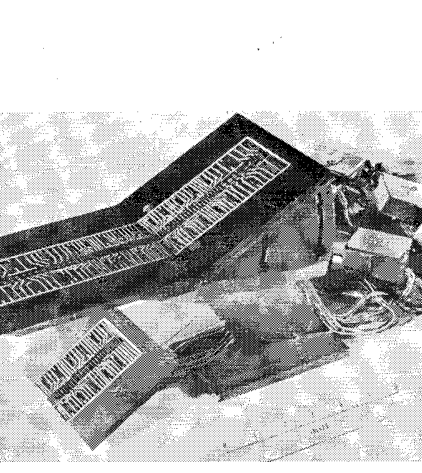
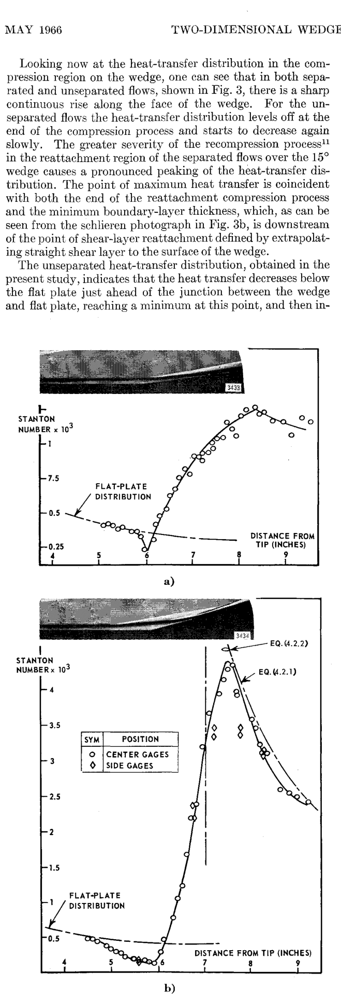
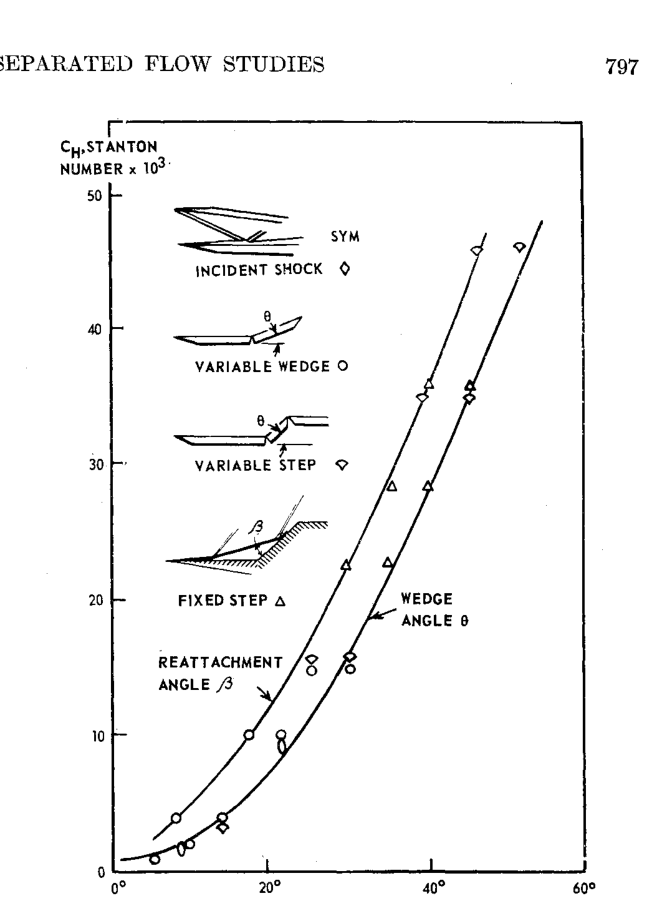
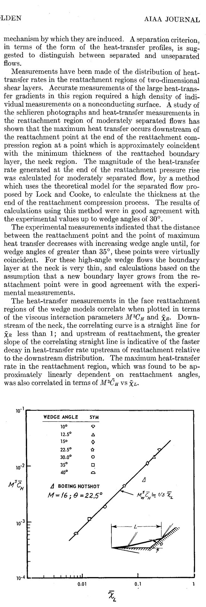

01中文摘要
在M=10、来流雷诺数1.35×10⁵/in的空气中实验研究二维模型上的逆压梯度与分离流，模型包括前向楔和外部激波发生器。用纹影和热流分布区分“仅被逆压梯度增厚的边界层”和“出现回流区的分离流”，提出以干扰起始处热流型线的特征变化作为分离判据。研究再附角、分离处边界层厚度和下游膨胀对楔面再附区热流的影响；再附热流强烈依赖再附角，而边界层厚度和下游膨胀在试验范围内影响很小。测量结果用粘性干扰参数M∞³χ和√Re关联，并与简单分离流模型计算比较。
02阅读说明
文章类型：实验研究（AIAA Journal 4(5), 1966, 790–799，Part II）。材料范围：全文10页，bundle 文本完整无截断；图件清单13张，图表可读。已回原 PDF 核对式(4.2.1)、式(4.2.2)与参考温度 T* 定义（PDF 第8页，印刷页797）及 Nomenclature（PDF 第1页，印刷页790）。信息完整度：几何、角度、Mach/Re 较完整；总温总压、壁温、测点类型与不确定度未给出（热流测量细节引至 Part I）。提取口径：仅用 bundle 文本/图注与上述 PDF 页核对，不引外部知识。 文章类型：期刊
03一句话核心与三句话摘要
在M=10炮风洞中用热流分布与纹影判别二维楔面分离，提出拐点型判据并给出再附热流相关。
- 高超声速层流分离流更稳定，但如何区分“仅被逆压梯度增厚的边界层”与“真正出现反向流的分离”，以及再附区强加热由什么参数控制，当时缺乏系统实验。 AI概括
- 在 Imperial College 炮风洞（M∞=10，Re∞=1.35×10^5/in）对平板-楔、外激波入射平板和台阶模型测量 Stanton 数分布并配纹影，变化楔角/激波发生器角、再附角、分离处边界层厚度与下游膨胀。 AI概括
- 楔角 8.5°、激波发生器角 4.3° 对应起始分离（约 2:1，支持分离与诱导机制无关）；热流剖面由尖点变圆钝是分离判据；再附峰值热流位于再附点下游的 neck 处，强烈依赖再附角，对分离处边界层厚度和下游膨胀不敏感。 AI概括
04核心内容清单
| 要点 | 类型 | 重要性 | 原文依据 | 属性 |
|---|---|---|---|---|
| 热流剖面可区分“边界层仅被增厚”与“真正分离”：未分离时最小值呈尖点，分离后变为圆钝凹形。 | 判据 | A | p.792–793；Fig.3（PDF第3–4页）、Fig.4（PDF第4页） | 原文明确 |
| 楔角 8.5°、外激波发生器角 4.3° 对应起始分离；二者约 2:1，符合 2α 等压升关系，说明分离与诱导机制无关。 | 定量判据/相似性 | A | p.792、p.794–795；Fig.4、Fig.6 | 原文明确 |
| 完全分离流的纹影结构为两道激波夹一个常压区，区内由直线剪切层界定；楔角减小使两激波汇聚并在起始分离点合并。 | 流态描述 | A | p.792；Fig.3b | 原文明确 |
| 再附热流峰值位于再附点下游、再附压缩末端，与边界层最薄处（neck）重合，而非恰在再附点。 | 机理/现象 | A | p.793–794、p.796；Fig.3b、Fig.8 | 原文明确 |
| 峰值热流强烈依赖再附角；楔角>35° 时再附点与峰值点几乎重合，楔角<60° 时下游膨胀影响可忽略。 | 参数影响 | A | p.796–797、p.799；Fig.10–11 | 原文明确 |
| 分离处边界层厚度对再附热流影响很小：45° 楔三种平板长度下最小热流比均约 0.6，再附区曲线几乎重合。 | 参数影响 | A | p.796、p.799；Fig.11 | 原文明确 |
| 最大热流对楔诱导与外激波诱导不敏感，所有数据随等效楔角落在一条连续曲线上，直至 90° 无机制突变。 | 相似性 | A | p.795–796；Fig.7、Fig.10 | 原文明确 |
| 用“边界层从再附点零厚度生长”+参考温度法式(4.2.1)可预测再附下游分布；峰值需式(4.2.2)，楔角≤30° 吻合，>35° 误差增大。 | 模型/验证 | A | p.797–798；式(4.2.1)(4.2.2)；Fig.2、3b、8a、9 | 原文明确 |
| 再附下游 M*C_H–χ̄_R 线性、上游斜率更大；最大热流用 M*C_H–χ̄_L 相关，并与 Boeing Hotshot 数据一致。 | 相关律 | A | p.797–798；Fig.12–13 | 原文明确 |
| 二维性：无侧板时楔面约五分之四展长为二维，侧板反而产生涡并畸变纹影，故拆除侧板但仍测展向分布校核。 | 实验技术 | B | p.791 | 原文明确 |
| 未观察到 Taylor–Görtler 涡条纹；作者认为 Miller 等观察到的条纹可能来自温敏漆的不均匀。 | 稳定性观察 | C | p.791 | 原文明确 |
05引言：研究问题与领域缺口
【原文明确】超声速/高超声速分离区通常比对应的亚声速分离更稳定，层流边界层与剪切层随 Mach 数升高更稳定，因而在很宽的 Reynolds 数范围内可存在完全层流的定常分离区（p.790）。【原文明确】工程背景是进气道、控制面和带扩张段的连接处（flared junctions）：连接处的逆压梯度常引起分离，分离剪切层再附区的热流可能造成严重加热问题（p.790）。【原文明确】已有工作：Sterrett 与 Emery 在 M=6 平板-楔上验证 Chapman–Kuehn–Larson 的平台压力关系可推广到高超声速；Bogdonoff 与 Vas 在 M=10 氦流中测量 10° 楔后分离区热流，发现分离区热流低于平板值、楔面前方升高、再附区达最大，但再附热流数据散布达 50% 且未解释；Miller 等在 Mach 16 热射风洞中发现分离前热流局部升高、随后骤降到约平板值 40%，并认为最小值点与分离点重合，再附区热流最大（p.791）。【AI概括】缺口：高超声速激波诱导分离的实验很少；再附区热流的控制参数（再附角、分离处边界层厚度、下游膨胀）未被系统分离；分离点/再附点与热流特征点的对应关系存在分歧。目标：一是用热流剖面建立区分“增厚”与“分离”的判据并比较楔与外加激波两种诱导方式；二是研究大分离区再附热流的生成机制与相关参数（p.791）。
06流动条件与几何构型
| 项目 | 数值/描述 | 依据 | 备注 |
|---|---|---|---|
| 风洞与来流 | Imperial College Gun Tunnel；M∞=10；Re∞=1.35×10^5/in（摘要）或 1.34×10^5/in（p.792）；试验气体为空气（摘要称 Mach 10 airflow） | Abstract，p.790；§3，p.792 | 两处 Re 数值相差约 0.7%，原文未解释 |
| 总温、总压、壁温 | 文中未提及 | p.790–792 | 运行条件详见 Part I，本文未复述 |
| 平板-楔模型几何 | 两块平板，第二块可 0°–30° 连续偏转，绕两面交界虚拟铰链转动；前缘厚度 1.5×10^-3 in（对应 Re_t=200）；平板长度未给，按“前缘激波不打到第二楔面、前缘 Mach 锥不包住研究区”选取 | p.792；Fig.1（PDF第3页） | 侧帘置于板下；侧板最终拆除 |
| 平板-楔试验矩阵 | 楔角 0°、2.5°、5°、7.5°、10°、12.5°、15°（每 2.5° 一档）；另用可变角楔测 22.5°、30° | p.792、p.796 | 每个工况均测展向热流分布 |
| 外激波入射平板 | 尖锐激波发生器角 2.1°、3.1°、5.2°、8.3°、10.4°；调整发生器位置使干扰发生在与楔实验大致相同的基于前缘距离的 Re | p.794 | 激波入射到平板层流边界层 |
| 固定角台阶模型 | 台阶高 0.75 in；固定楔角 30°、45°、60°、75°、90° | p.796 | 研究大分离区再附加热 |
| 可变角台阶模型 | 楔面长 1 in；楔角 35°–90° 连续可调，绕台阶底部虚拟铰链转动；实测 35°、40°、45°、52.5° | p.796；Fig.9 | 用于分离再附角影响 |
| 45° 楔变平板长度 | 同一 45° 楔配三种平板长度（具体长度文中未提及） | p.796；Fig.11 | 用于分离处边界层厚度影响 |
07核心现象与关键参数
| 参数 | 定义 | 数值 | 关系/说明 | 依据 |
|---|---|---|---|---|
| 来流 Mach 数 M∞ | 自由来流 Mach 数 | 10 | 全文唯一 Mach 数 | p.790–792 |
| 来流 Reynolds 数 Re∞ | 每英寸来流 Reynolds 数 | 1.35×10^5/in（摘要）；1.34×10^5/in（p.792） | 决定层流边界层厚度与干扰尺度 | p.790、p.792 |
| 起始分离楔角 θi.s. | 热流最小值剖面由尖点变圆钝、且最小热流–楔角斜率突变对应的楔角；剪切层长度外推为零亦给出同值 | 8.5° | 与 Needham 压力判据一致；精度优于 ±10% | p.792–793；Fig.4 |
| 起始分离激波发生器角 αi.s. | 外激波诱导分离的临界激波发生器角 | 4.3° | θi.s./αi.s.≈2，符合 2α 等压升关系 | p.794–795；Fig.6 |
| 再附角 β | 剪切层再附到楔面/台阶面的角度（等于对应楔角） | 测试范围 5°–90°；β>35° 时峰值热流与再附点几乎重合 | 最大热流近似随 β 线性增大 | p.790、p.796–798；Fig.10 |
| 最小热流与平板值之比 | 分离区局部最小 Stanton 数除以同一位置平板值 | 45° 楔三种平板长度均约 0.6 | 对分离处边界层厚度弱依赖 | p.796；Fig.11 |
| 黏性干扰参数 χ̄ | 原文 Nomenclature 写作 χ̄=M*(C/Re)^(1/2)，C 为线性黏温关系常数；M 的指数在扫描件中不清晰 | 用于 M*C_H–χ̄_R、M*C_H–χ̄_L 相关 | 再附下游线性相关；上游斜率更大 | Nomenclature，p.790；p.797–798 |
| 参考温度 T* | T*=T∞+0.58(Twall−Te)+0.19(Taw−T∞) | 用于式(4.2.1)中带 * 的物性 | 参考温度法 | Nomenclature，p.790；p.797 |
08方法与数据
【原文明确】全部实验在 Imperial College Gun Tunnel 完成，运行条件与测量技术见 Part I（p.791）；来流为 Mach 10 空气，Re∞=1.35×10^5/in（摘要，p.790；正文 p.792 写作 1.34×10^5/in）。【原文明确】平板-楔模型由两块板组成，第二块可相对第一块在 0°–30° 连续偏转，绕两面的虚拟铰链转动，铰链处保证洁净与气密；模型上测点在前缘与激波/边界层干扰区加密；板下挂侧帘以避免板下流动干扰（p.792）。【原文明确】热流测量在非导热模型表面密集布点（具体传感器、采样与标定见 Part I，本文未给出）（p.791、p.796）。【原文明确】流场显示用纹影；另用滑石粉观察侧板涡、用蜡层熔化与胶带烧痕判断楔面二维性（p.791）。【原文明确】再附点由纹影中直线剪切层外推到楔面确定，作者指出该位置与理论分析[7]预测仅略有差别（p.791）。【原文明确】二维性检查：无侧板时中心线热流与有侧板时相同；蜡与烧痕显示楔面上约五分之四展长为二维；侧板本身会产生侧板-楔间涡并使纹影畸变，故最终拆除侧板，但每个二维模型仍测展向热流分布作校核（p.791）。【原文明确】起始分离判据：最小热流随楔角（或激波发生器角）变化的斜率突变，辅以“剪切层长度外推到零”的角度；作者称该技术结合纹影可达优于 ±10% 的精度（p.792–795）。【AI推断】由于只测热流与纹影、未测压力分布，分离点与再附点的判定主要依赖热流剖面对应关系与剪切层几何外推，带有解释性。
| 项目 | 内容 | 依据 | 备注 |
|---|---|---|---|
| 实验设备 | Imperial College Gun Tunnel；运行细节见 Part I | p.791 | 炮风洞，测试时间短 |
| 模型1 | 可变角平板-楔，第二板 0°–30°，虚拟铰链，铰链洁净气密，干扰区测点加密，板下侧帘 | p.792；Fig.1 | 另配短第二板以测大楔角 |
| 模型2 | 平板+外置尖锐激波发生器，角度 2.1°–10.4° | p.794 | 与模型1同来流条件 |
| 模型3 | 固定角台阶（0.75 in 高；30°–90°）与可变角台阶（35°–90°，面长 1 in） | p.796 | 研究大分离区 |
| 热流测量 | 非导热模型表面高密度测点，给出 Stanton 数分布；测点类型、采样率、标定与不确定度文中未提及（详见 Part I） | p.791、p.796 | 再附区梯度大，要求高密度布点 |
| 流场显示 | 纹影；滑石粉显示侧板涡；蜡层熔化与胶带烧痕显示再附表面对称性 | p.791 | 纹影用侧板时会畸变 |
| 二维性校核 | 展向热流分布；有/无侧板中心线热流对比；蜡与烧痕显示约 4/5 展长为二维 | p.791 | 最终所有实验拆除侧板 |
| 再附点判定 | 将纹影中的直线剪切层外推到楔面；与理论分析[7]预测仅略有差别 | p.791 | 用于定义 S（再附点上游距离）与 x_R |
| 起始分离判定 | 最小热流–角度曲线斜率突变 + 剪切层长度外推为零；结合纹影 | p.792–795 | 精度优于 ±10%，但作者称该技术本身“inherently difficult” |
| 模型验证 | 式(4.2.1)(4.2.2)与 Fig.2、3b、8a、9 的实验分布对比；相关式与 Boeing Hotshot 数据对比（Fig.13） | p.797–798 | 楔角≤30° 吻合，>35° 误差增大 |
09核心推导与公式
把再附区当作从再附点重新生长的层流边界层：先用参考温度法给出再附下游热流分布式(4.2.1)，再针对该式在再附点发散的问题，用 Lock–Cooke 分离流剖面估计再附压缩末端的边界层厚度，得到峰值热流式(4.2.2)，最后用 M*C_H–χ̄ 相关整理数据。
关键假设
- 二维、层流、定常流动；再附角 β>35° 时再附点与最大热流点距离很小，可近似重合
- 再附后边界层从再附点以零厚度重新生长（一阶近似）
- 再附后常压区物性用参考温度 T* 计算（参考温度法）
- Lock–Cooke 分离流剖面可用于估计再附压缩末端的边界层厚度
- 忽略再附激波与边界层增长的相互作用细节；作者明确这些项在再附区不能严格忽略，只能作工程近似
- 最大热流相关式依赖与 Boeing Hotshot 数据的经验一致性
推导过程
纹影显示 β>35° 时再附点与峰值热流点几乎重合，且再附压缩使剪切层剧烈变薄，因此把再附点当作新边界层的虚拟前缘。
用参考温度把可压缩层流边界层的物性折算到不可压形式；带 * 的物性均在 T* 下取值。
以再附点为原点、x_R 为沿楔面向下游距离，套用层流平板 Stanton 数/热流关系，得到再附区热流分布；ρ*、u_e、Pr* 取参考温度与边界层外缘值。
x_R→0 时式(4.2.1)给出无限热流，故不能用它求峰值；必须给出再附压缩末端的边界层厚度尺度。
按[14]的方法，以 Lock–Cooke 分离流剖面估计再附压缩末端的边界层厚度，把式(4.2.1)中的 x_R 换成由 ρ3、u3、μ3、x3 组成的当地 Reynolds 数，得到最大热流表达式；下标 3 表示再附压缩结束处。
把再附下游与上游的热流分别画成 M*C_H 对 χ̄_R、χ̄_S 的关系，两者近似线性但上游斜率更大；最大热流则用 M*C_H 对 χ̄_L 相关，L 取前缘到再附点距离，C_H 按壁面当地条件计算。
适用边界：式(4.2.1)在再附点发散，只能用于下游；式(4.2.2)依赖 Lock–Cooke 剖面与参考温度法，楔角>35° 时对最大热流误差增大；模型只适用于层流、二维、β>35° 的再附；最大热流相关式依赖与 Boeing Hotshot 数据的经验一致性，外推需谨慎；作者明确指出再附区的法向压力梯度、剪切层涡量与再附激波-边界层干涉在严格意义上不能忽略。
10结果：主要发现与关键证据
【原文明确】平板-楔（楔角 0°–15°，每 2.5° 一档）：未分离时，拐角前热流因边界层增厚而低于平板值，最小值在铰链线附近呈尖点（cusp）；楔面上因压缩、边界层变薄而上升，压缩结束后再缓慢下降（p.792–793，Fig.3a、Fig.4）。【原文明确】完全分离时纹影出现两道清晰激波：第一道从分离区发出，其后是近似常压区、由直线剪切层界定；第二道从剪切层末端发出，把流动压缩到最终楔面压力；减小楔角使两道激波逐渐汇聚，最终在起始分离点合并为单道激波（p.792，Fig.3b）。【原文明确】热流剖面在最小值区由尖点变为圆钝凹形；楔角从 7.5° 增至 12.5° 时形状发生明显变化，“尖点刚好变圆”对应起始分离；最小热流随楔角下降的斜率也在此时突变（p.792–793）。【原文明确】由剪切层长度外推得楔角 8.5° 起始分离，与 Needham 的压力判据一致（p.792）；外激波实验得激波发生器角 4.3°（p.794，Fig.6）。【原文明确】8.5°/4.3°≈2，符合“无黏等熵时 2α 楔角与 α 激波发生器产生相同压升”的关系，说明分离现象与诱导机制无关（p.795）。【原文明确】再附热流：最大值位于再附点下游、再附压缩过程末端，且与边界层最薄处（纹影上的 neck）重合；再附点本身在峰值热流点上游（p.793–794）。【原文明确】随楔角增大，再附点与峰值热流点距离减小，楔角>35° 时二者几乎重合（p.796）。【原文明确】台阶模型（台阶高 0.75 in；固定角 30°、45°、60°、75°、90°；可变角 35°–90°）：再附区热流与梯度很大，峰值仍位于 reattachment 下游的 neck；所有最大热流数据随楔角/等效楔角落在一条连续曲线上，未显示传热机制突变（p.796，Fig.8–10）。【原文明确】45° 楔配三种平板长度：分离区最小热流与平板值之比均约 0.6，再附区热流分布几乎重合，说明再附热流对分离处边界层厚度仅弱依赖（p.796，Fig.11）。【原文明确】30° 台阶与 30° 可变楔对比表明下游膨胀对分离区尺寸与结构的影响可忽略；Fig.10 中同角不同台阶高的最大热流一致，说明楔角<60° 时下游膨胀可忽略（p.796）。
| 发现 | 证据 | 证据类型 | 强度 | 位置 | 属性 |
|---|---|---|---|---|---|
| 热流剖面在最小值处的形状（尖点 vs 圆钝凹形）可区分未分离与已分离流动。 | 楔角 0°–15° 的 Stanton 数分布与对应纹影（Fig.3a/3b）；楔角 7.5°→12.5° 时形状突变（Fig.4）。 | 实验现象 | 强 | p.792–793；Fig.3–4 | 原文明确 |
| 楔诱导起始分离角为 8.5°，外激波诱导为 4.3°，二者约 2:1，支持分离与诱导机制无关。 | 最小热流–楔角/激波发生器角曲线的斜率突变；剪切层长度外推至零；8.5° 与 Needham 压力判据一致。 | 定量实验 | 强 | p.792–795；Fig.4、Fig.6 | 原文明确 |
| 完全分离流的纹影由两道激波、常压平台和直线剪切层组成；减小楔角使两激波汇聚并在起始分离点合并。 | Fig.3b 纹影与热流分布；正文对流态的描述。 | 流态观察 | 强 | p.792；Fig.3b | 原文明确 |
| 再附热流峰值位于再附点下游、再附压缩末端，并与边界层最薄的 neck 重合。 | 纹影与热流分布的逐点对照；楔角>35° 时两点几乎重合，距离随楔角增大而减小。 | 实验现象 | 强 | p.793–794、p.796；Fig.3b、Fig.8 | 原文明确 |
| 再附峰值热流强烈依赖再附角，近似线性增大；对分离处边界层厚度和下游膨胀仅弱依赖。 | Fig.10 中 30°–90° 台阶与可变楔数据落在一条连续曲线；45° 楔三种平板长度热流曲线重合（最小比≈0.6）；30° 台阶与 30° 楔一致。 | 参数研究 | 强 | p.796–797、p.799；Fig.10–11 | 原文明确 |
| 楔与外激波诱导的最大热流在相同等效楔角下相同，且随角度连续变化至 90°，无传热机制突变。 | Fig.7 的楔角–最大热流图；Fig.10 中两类数据合并成一条曲线。 | 相似性 | 强 | p.795–796；Fig.7、Fig.10 | 原文明确 |
| “零厚度再生长 + 参考温度法”可预测再附下游热流；峰值热流需用 Lock–Cooke 厚度估计，楔角≤30° 吻合，>35° 误差增大。 | 式(4.2.1)与 Fig.2、3b、8a、9 的对比；式(4.2.2)与 Fig.9、10 的对比。 | 模型验证 | 中 | p.797–798；式(4.2.1)(4.2.2) | 原文明确 |
| 再附下游 M*C_H–χ̄_R 线性、上游斜率更大；最大热流可由 M*C_H–χ̄_L 相关，并与 Boeing Hotshot 数据经验一致。 | Fig.12a/12b 的相关直线；Fig.13 的最大热流相关。 | 相关律 | 中 | p.797–798；Fig.12–13 | 原文明确 |
| 未分离流中干扰起始处没有热流高于平板值的局部峰，分离区也未见两个局部极小，与 Miller 等的报道不同。 | 本文所有楔与外激波热流剖面；作者对 Miller 数据的重新解释。 | 对比/争议 | 中 | p.793–794 | 原文明确 |
| 楔面约五分之四展长为二维；侧板会引入涡并畸变纹影，拆除侧板不影响中心线热流。 | 展向热流分布；滑石粉、蜡层与胶带烧痕显示。 | 实验技术 | 中 | p.791 | 原文明确 |
11机制解释与论证链
【原文明确】层流边界层在逆压梯度下先增厚；若逆压梯度不足以造成反向流，热流只是平滑下降并在拐角附近出现尖点状最小值，随后因压缩、边界层变薄而沿楔面上升。若发生分离，纹影出现分离激波，激波后是近似常压的平台区，平台区由一条直线剪切层与外部流动分开；剪切层在楔面上再附时发出再附激波，把流动压缩到楔面压力。分离泡内边界层厚、壁面温度梯度小，热流低于平板值；再附压缩使剪切层急剧变薄、边界层从再附点重新生长，在 neck 处厚度最小、热流达到峰值，随后边界层增厚使热流下降（p.792–793、p.796）。【原文明确】热流剖面的形状因此成为分离判据：分离前最小值是“尖点”，一旦出现反向流，最小值变为“圆钝凹形”，因为分离区边界层结构与热流衰减规律改变（p.792–793）。【原文明确】楔与外加激波给出几乎相同的热流剖面，且 θi.s.≈2αi.s.，说明在自由干扰框架下分离只取决于当地压力 Rise 与边界层状态，而不取决于产生逆压梯度的具体装置（p.795）。【AI推断】再附角增大使再附压缩更强、剪切层更薄，故峰值热流随 β 近似线性增大；而分离处边界层厚度只改变上游分离尺度，对再附点附近由局部压缩决定的薄边界层影响较小，故其对峰值热流影响弱。
12讨论：结论、贡献与局限
【原文明确】作者把再附加热机制归结为：再附时剪切层被强烈压缩、急剧变薄，边界层从再附点重新生长，在 neck 处厚度最小、热流最大，随后边界层增厚使热流下降；因此峰值热流不在一阶再附点，而在再附压缩结束处（p.796–797）。【原文明确】基于该图像，对 β>35° 的工况假设“边界层从再附点以零厚度生长”，用参考温度法层流平板公式（式4.2.1）计算再附下游热流，与实验吻合；但该式在再附点给出无限热流，故需用 Lock–Cooke 分离流剖面估计再附压缩末端的边界层厚度，得到最大热流式（4.2.2），在楔角≤30° 时与实验吻合，>35° 时误差增大（p.797–798）。【原文明确】相关上，再附下游 M*C_H–χ̄_R 近似线性，上游 M*C_H–χ̄_S 斜率更大，反映上游热流随距离衰减更快（压力也衰减更快）；最大热流用 M*C_H–χ̄_L 相关，L 取前缘到再附点距离，C_H 按壁面当地条件计算（Truitt 做法），并与 Boeing Hotshot 数据经验吻合（p.797–798，Fig.12–13）。【原文明确】与 Miller 等的分歧：本文在所有楔与外激波工况中均未发现干扰起始处热流高于当地平板值，也未发现分离区出现两个局部极小；作者认为 Miller 剖面中的双极小可能与其判读有关（p.793–794）。【AI推断】“热流最小值点=分离点”只在起始分离时成立；一般分离流中最小值对应边界层最厚处，位于分离点下游，这一点本文用纹影给出了直接对照（p.793–794）。
作者结论
【原文明确】作者结论：(1) 对本文构型，分离现象与热流剖面形状不依赖逆压梯度的诱导机制（前向楔或外加激波），并据此提出以热流剖面形状判别分离/未分离的判据（p.798）。(2) 再附区最大热流出现在再附点下游、再附压缩末端，与再附边界层最薄的 neck 大致重合；用 Lock–Cooke 模型估计该处厚度后，式(4.2.2)在楔角≤30° 与实验吻合（p.798）。(3) 再附点与峰值热流点的距离随楔角增大而减小，>35° 时几乎重合，此时“从再附点重新生长边界层”的假设与实验吻合（p.798）。(4) 再附热流测量可按 M*C_H–χ̄_R（下游，χ̄_R<1 时直线）与 M*C_H–χ̄_S（上游，斜率更大）相关；最大热流按 M*C_H–χ̄_L 相关，并近似随再附角线性增大（p.798）。(5) 对本文构型，分离处边界层厚度对再附热流影响可忽略；若下游膨胀发生在距 neck 约两倍当地边界层厚度以外，其影响也很小（p.799）。
主要贡献
- 提出并验证了基于热流剖面形状（尖点→圆钝）的起始分离判据，楔角 8.5°、外激波 4.3°。
- 用 2α 等压升关系证明分离与诱导机制无关，把楔与外激波实验统一起来。
- 澄清了再附峰值热流的位置：在再附点下游的 neck 处，而非再附点。
- 系统分离了再附角、分离处边界层厚度、下游膨胀三个因素对再附热流的影响。
- 给出式(4.2.1)(4.2.2)的工程计算方法与 M*C_H–χ̄ 相关，可供再附热流预估。
局限与未解决问题
【原文明确】作者承认：热流剖面判据需要高精度与高分辨率才能识别最小值处的形状变化，技术本身“inherently difficult”，精度约 ±10%；式(4.2.1)在再附点发散；式(4.2.2)在楔角>35° 时误差增大；再附区法向压力梯度、剪切层涡量与再附激波-边界层干涉在严格意义上不能忽略（p.795、p.797–798）。【AI推断】本文只测热流与纹影，未测压力分布与反向流速度，分离点/再附点判定依赖几何外推；仅有 M=10、约 1.35×10^5/in 的单一来流条件，不能说明 Mach/Re 的影响；总温总压、壁温与测点不确定度未给，热流绝对值难以独立复现；最大热流相关式依赖 Boeing Hotshot 数据，普适性有限。
13对高速流动与工程的意义
【AI推断】对高超声速进气道、控制面与带扩张段连接处的热防护设计：再附热流峰值出现在再附点下游而非再附点，按再附点布置测点或热防护会低估峰值位置；峰值随再附角近线性增大，减小再附角或增加再附前边界层厚度不能显著降低峰值。对实验诊断：热流剖面的尖点/圆钝特征可作为廉价的分离判据，配合纹影可把起始分离角定到 ±10%。对建模：式(4.2.1)(4.2.2)与 M*C_H–χ̄ 相关可作为工程预估与CFD验证基准；但其层流、二维、β>35° 的适用边界须遵守。本文不涉及湍流、真实气体与三维有限展长的定量影响，不能直接用于全尺寸飞行器。
14核心图件




15可引用原文素材
| 原文短句 | 可支持的观点 | 位置 | 使用建议 |
|---|---|---|---|
| “regions of separated flow are in general more stable” | 高超声速层流分离流可长期稳定存在 | p.790（Introduction） | 研究动机 |
| “two distinct shock formations” | 完全分离流的双激波结构 | p.792（§3.1） | 流态描述 |
| “the cusp shape is just rounded at the point of minimum heat transfer” | 起始分离对应热流最小值由尖点变圆 | p.792（§3.1） | 分离判据 |
| “independent of the mechanism by which it is induced” | 分离与逆压梯度诱导方式无关 | p.795（§3.2） | 楔与外激波等价性 |
| “maximum heat transfer occurs downstream of the reattachment point” | 峰值热流位于再附点下游 | p.798（Conclusions） | 核心机理 |
| “strongly dependent on reattachment angle” | 再附热流强烈依赖再附角 | p.790（Abstract） | 参数敏感性 |
| “little influence of the boundary-layer thickness at separation” | 分离处边界层厚度影响很小 | p.790（Abstract） | 参数敏感性 |
| “predicts an infinite heat-transfer rate at the point of reattachment” | 式(4.2.1)在再附点发散，需另行估计厚度 | p.797（§4.2） | 模型局限 |
16最终核验
| 核验项 | 结论 |
|---|---|
| 仅基于全文 | 是。仅使用 bundle 全文/图注，并用原 PDF 第1、8页核对 Nomenclature、式(4.2.1)、式(4.2.2)与 T*；未引入外部文献或数据。 |
| A 级要点有依据 | 是。A 级要点均给出印刷页码与图号/式号；8.5°、4.3°、0.75 in、0.6、35°、60°、2δ 等定量值均回查正文。 |
| 属性标注 | 是。three_sentence、core_points、findings 均标注属性；IMRaD 中实验数据注明页码，概括与推论用【AI概括】/【AI推断】区分。 |
| 覆盖范围 | 是。IMRaD 四节、8 组工况、关键参数、方法、推导（6步）、机制、10条发现、结论、贡献、局限、意义、8条引文、4张图、核验与开放问题均已覆盖。 |
| 无编造 | 未编造页码、图号、公式或数据；总温总压、壁温、测点类型、平板长度等缺失项明确写“文中未提及”；χ̄ 的 M 指数与式(4.2.2)分母符号不清处已注明“受限于材料，无法完全确认”。 |
需回原文确认
- 摘要 Re∞=1.35×10^5/in 与正文 1.34×10^5/in 不一致，哪一个对应实际运行条件？
- 热流测点类型、标定与不确定度仅引至 Part I，本文未给，无法评估再附峰值热流的绝对误差。
- 壁温是否保持冷壁/常温、是否随工况变化，文中未提及；这会影响参考温度法与热流绝对值。
- 式(4.2.2)分母 Reynolds 数的确切形式在扫描件中不清晰，需回清晰原版确认是 ρ3u3x3/μ3 还是其他组合。
- “剪切层外推到楔面”定义再附点带有主观性，尤其小再附角工况；本文未给该判读的不确定度。
- Fig.13 的相关依赖 Boeing Hotshot 数据，本文未给出该数据的 Mach/Re 范围，外推边界不明。
17关联文献
依据标签、板块、构型与作者脉络自动关联，可据此追踪同一问题的前序与后续工作。
18引用格式
选择期刊风格后复制；出处保留原刊名。BibTeX 可直接用于 LaTeX。
引用格式
Holden, M. S. 1966 Experimental studies of separated flows at hypersonic speeds. II. Two-dimensional wedge separated flow studies. AIAA Journal. https://doi.org/10.2514/3.3548
PDF上传 PDF 并更新本页
本页缺少全文、摘要或图件时，可在浏览器本地补入 PDF。解析完全在本机完成，不上传网络；完成后会更新本页的 PDF 打开链接、原摘要、IMRaD 机器抽取、关键句与含图页面。复杂的公式语义与中文深度解读仍以原文和既有精读记录为准。
Zotero 笔记摘录
给出了(M θ_i)² 正比于粘性干扰参数，并在Hankey (1967)和Inger (1994)的工作中得到证实